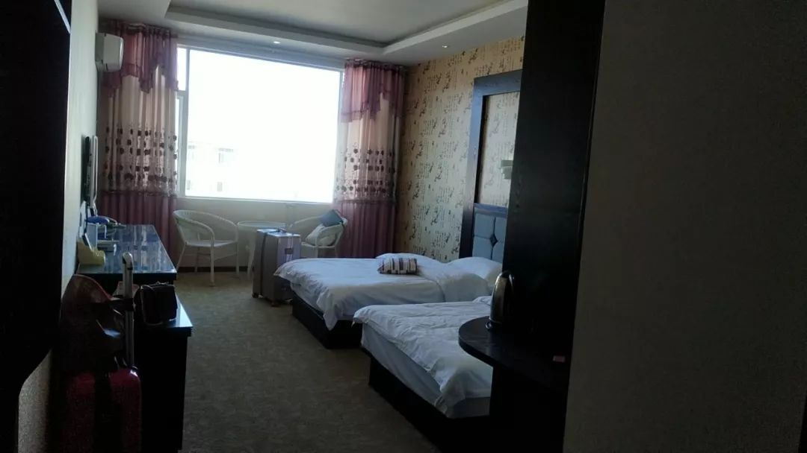

交通停摆之后，武汉医护人员出行难怎么解决
原文链接 备份链接 受到武汉新发布限行令的影响，也出于对车主健康的担忧，善缘车队停止接送医护人员。26日上午，在一些武汉本地的互助群里，提供免费住宿或为医生送餐的武汉市民们还在热议：目前我们还没收到通知，是不是还可以自发去接送医生？ 本 …
“我们这部分很模棱两可，不上不下的人，没有人管”
“问题核心是对病毒的恐惧，变成了对湖北人的恐惧”
本文首发于南方人物周刊
文 | 本刊记者 张明萌 实习记者 梁翰文
编辑 | 蒯乐昊
全文约3645字，细读大约需要10分钟

王安平26日入住酒店
“云南滞留武汉游客因疫情管控无法返乡，入住宾馆饭店被拒绝”的相关信息在网上传播。各个省份出于疫情防控的需要，也陆续开始了对外来武汉人的筛查，这是一项涉及面极广、难度极大的工作。
王安平就是一位滞留丽江的武汉游客，以下为她的口述。
我们昨天吃饭的时候，听到旁边的游客聊天，说昨天才到丽江，所有景区都关门。今天酒店也不让住了，但他们至少能回家。我们呢？说句不好听的，现在叫个车，有的看到你是武汉的电话，都不敢接，严重到这种程度。
昨天我和朋友就开始想办法，加了一个云南滞留的武汉旅游微信群，是一个在丽江开客栈的武汉老板拉的，他义务聚拢散落在这边、得不到帮助的老乡。里面有两百多人，大部分是来丽江的游客。每个人背后都是两、三个人甚至五、六个人的家庭，这么算算，涵盖了1000-2000个武汉人。
这几天群里情况很混乱，有个别酒店还能入住，有人入住遇到阻碍，打当地市长热线，不同地方反映的情况也不对等，有的让我们等消息，还有的劝我们离开丽江。有群友昨天去了当地人民医院，开了一个健康证明，他们在想说，会不会有一个这样的健康证明，拿着去酒店，别人愿意收我们？有群友打了110，警察说这个我们管不了。有的游客在云南省待不下去，想尽一切办法，坐火车、坐飞机离开，去了别的地方，到处流窜。大家都是颠沛流离不稳定的局面。
我们没有得到一个统一的官方回复，也没有统一的措施，现在到底是管我们还是不管我们？按比例来说，绝大多数群友这几天都被酒店推出来了。群主昨天开始统计人员数量和信息，上报给了丽江政府，政府开会讨论，指定了两个酒店协调。但是昨天住了，今天呢？明天呢？我们根本不知道什么时候能够回到湖北省。像我们这种，今天退了房，此刻在酒店外面坐着，也只能等着群主统计今天的名单，再和政府沟通。我们每天等消息，回不了家，也不敢去别的地方，很被动。
我19号离开武汉到昆明，这本来是我的春节假期。那会儿还没疫情消息出来，我们群里绝大多数人都跟我一样，都是按照正常出游的行为出来，结果回不去。我的飞机晚上19号晚上起飞，当时什么都没公布，我坐地铁到了天河机场，上航站楼进安全门，安保人员把跟我一起的一群人围了一圈，暂停了1-2分钟，我看到右边有个红外检测的工具。我们多少知道最近肺炎和流感很严重，但只是知道这样一个消息。而且我朋友打专车到机场，进站很顺利，也没有测体温。根本感觉不到情况严重，还误以为这跟每个春节我出去玩一样。如果当时我知道是20号宣布的那种情况，我肯定会留在家里。
算上19号，我已经出来八天了，我也跟我武汉的同学、朋友、同事联系，武汉市内的情况我比较清楚，轻微症状的人都是建议自行在家隔离。他们也是每天在家平复心情，在通过网上的专家咨询。现在武汉三镇之间公路交通都是由政府统一调配，普通人没机会出门，他们也很恐慌。但是他们恐慌，至少有一个安静的屋子在里面呆着，我们每天都不知道能去哪儿，也害怕。我跟其他地方的老百姓一样，也害怕被别人感染。我目前没有症状，但我也怕自己在潜伏期，这几天我和朋友每天都带着口罩，尽量不跟别人说话，大多数人都这样。现在情况是，所有人都绷着，没人敢崩溃，一旦崩溃了没法解决问题。但我们也很心寒，一方面我作为一个湖北人，我很体谅别人的看法和恐惧，但是如果爆发在北京市，或者广东省，当地的人也不会愿意遭遇这样的对待。
我们的诉求很简单，希望能够有一个妥善的点，来把我们这部分人安置了。既然国家呼吁原地滞留，自我隔离，为了自己、为了别人安全着想，那希望各地的政府都能够响应这个号召。其次我们聚在一起，我们也怕传染性很高，现在只能统一管理，才有可能集中医疗和设备来监控，如果我们散在各地，危险系数更大。我们都愿意配合，但暂时就是还没一个说法和对策。我们也听说，有的落地郑州或者厦门，一落地，政府马上会安置和隔离，食宿都由政府统一管理。我们有些情绪不好的群友，会直接说“巴不得得病被隔离，起码还有人管我们”。湖北牺牲很大，整个省都关闭了，然后每天我都看到网上各种冷嘲热讽，我心里明白，我懂，但是真的……（哽咽）
我对这个病没有很慌，我觉得大家按照官方公布的手段做就行，慌也没用。现在能做的就是保护好自己，不要和人接触。我唯一的焦虑是我们没有地方住，也不知道十天半个月还是一两个月才能回家。像丽江政府，昨天指定了酒店，但是没告诉我们能够住多久，也涉及到费用的问题，一天300块我们非常能理解，过年期间很便宜了，而且在这种情况下还能收留我们，我们非常感恩。但如果一个月每天都这样，这还只是住宿的部分，一家那么多口人，还有吃饭，还要生活。我本来27号飞回武汉的，31号要上班，现在肯定回不去了，也不知道在外面要留多久。我们现在没有办法工作和创收，我们能撑多久？
我也知道网上有很多谣言，我们也不晓得该信哪个消息，难免恐慌。同事建议我们赶紧去昆明，但昆明拒了又得换地方。我们明明是普通的、不知情的出行老百姓，现在搞得到处流散，万一真的出了什么事，100张嘴我也说不清，你会判定我恶意传播，谁会听我讲话呢？
在排除了一些信息之后，我勉强自己理性客观做了选择。我特别焦虑，我不知道今天安排了一个地方，明天又将何去何从。我不知道离开时对的？还是留下来是对的。火车上能去哪儿呢，火车上只能保证吃住，这个地方下不了站就再坐去别的地方。但这么流窜也不是个事儿。
昨天群里有人分享了其他城市的自由互助群，海南的、广州的、厦门的、长沙的，我相信有很多地方他们慢慢在组建群，老乡有一些好心的，我们在网络上聚到一起了，大家一起想办法互相帮忙。
我想过这个问题，能不能找一个途径，各省市、各地方的媒体能够反映一下我们的情况，相关部门能够妥善地来安置一下我们这拨人。昨天有个群友，他说的那个话特别好，他就说，既然国家给的建议是所有全国人民都原地安置，听官方的建议，好好的消毒，自我保护，自我隔离不要乱窜。 既然这样倡导，湖北省内、在家里隔离的那部分人，全国人民还每天关心、问候，给物资，想办法援助。在外面已经生了病的，也会马上隔离，不可能你得了病大家不管你。我们这部分很模棱两可，不上不下的人，没有人管，但其实这部分人的隐患也是最大的。
我们流散在各地，无家可归，每一个城市都是散播的点，如果不能集中管理，我们又没办法进行自我隔离，你今天把我赶出这个酒店，明天我就得去另一个酒店，在路上转移的过程流动性，有多大的危险？你不把我们集中，这样不行的。我们自己去哪都不去了，那些老人、小孩、一大家子、怀着孕的大肚子孕妇，他们怎么办？
大家都是人，只是这些人，他不是你的亲生父母，不是你的兄弟姐妹，你可能感受没那么深而已。我们又没有做错什么。你要愿意收我就收，不能收我没有办法，我也只能默默配合，你要怕我就躲远一点，大家都是普通的人，也都很善良，我们能怎么办？
昨天告诉我们这两天行程取消，我马上答应了，只希望这两天有安置。今天早上一起来说，安置酒店相应政府要求，暂停营业。所以我们就变成了今天也没有地方住。也有朋友告诉我们说，你要不要去长沙？去那找你的亲戚，找同学，我们想过这个问题，因为我说我不确定，就算我潜伏期过了，我确认自己十分健康，我们也不太愿意去麻烦别人，现在的歧视太严重了，我去了之后我不但影响自己，可能还影响别人好心收留我的一家人，闹得大家跟我一起被隔离，这还算最基础的影响。还不算影响太大，可能影响再大一点，我可能影响到别人说你家里有湖北人，公司都不让你上门，这个例子不是我自己臆想出来的。我有朋友移民了美国，现在美国确诊两例了，对吧？他在美国西雅图定居，她的公公婆婆常年在武汉，但她的公公婆婆比我出发的时间还要早，可能就1月10号中旬就已经去美国跟他们准备过春节了，现在他们在西雅图居住的社区也知道了他们家里有湖北人，他嫂子所在的美国公司就直接通知说：你暂时不要来上班了。
我也不能对人家凶，那有什么办法？这样只会让别人对湖北人印象更不好。明明这个问题核心是对病毒的恐惧，结果变成了对湖北人的恐惧，这是不公平的。谁说这个病毒它的名字叫湖北了？现在我说句很公道的话，各个省市都已经出现了感染人群，病毒的感染性也确认了人传人，还有进行二次的非经过武汉和湖北地区的传播性，全国各地都有这样的病毒的隐患，这个隐患也不是全部潜伏在湖北人的身上。

云南省文化和旅游厅公告
与王安平通话后，下午她发来一张云南省文化和旅游厅的公告，公告显示：请各州市在2020年1月26日18：00前确定一家宾馆饭店统一提供给疫区滞留在当地的游客集中住宿。本刊记者向云南文化和旅游厅核实，确认了此通告的真实性。
下午15时，王安平入住了群主帮忙联系的酒店，一天180元，她办了五天，前台说还可以续。“这让我稍微安心了一些。”她说。群内信息显示，该酒店有45间房，并不能完全容纳滞留旅客。截至发稿时间，该群仍在紧张的陆续协调中。
群主协调好了今天的酒店并在群内公布
（为保护口述者隐私，文中王安平为化名）

征集疫区真实故事，记录我们的命运
《南方人物周刊》现面向所有新冠肺炎一线的读者征稿，写下你正在经历或亲眼所见的故事。如果你是一线医护人员或其家属，疫区公共服务人员，病患本人或家属，专业人士等等，如果你有故事、有困难、有建言，请让我们知道。我们也同时征集采访对象和新闻线索，留下你的联系方式，我们的记者会同您联系。我们会充分保护受访者的隐私。
隔离疫情，但不隔离爱。写出你的真实故事，你的困境和希望，记录我们共同的命运，围城内外携手共度。
此次征稿形式不限：文字（2000字左右）、图片（原创拍摄）、音频视频（原创录制）
祝愿所有在疫区和不在疫区的朋友们，新春快乐，平安健康。
投稿方式：
1、记者热线（同微信）：13918532564、13631483936
2、《南方人物周刊》微信公号投稿邮箱：wuhantingzhu@126.com
3、《南方人物周刊》官方微博讨论话题：#我在疫区有话说#
注：请务必保证投稿内容的真实、客观、理性，不造谣，不传谣。
原文链接 备份链接 受到武汉新发布限行令的影响，也出于对车主健康的担忧，善缘车队停止接送医护人员。26日上午，在一些武汉本地的互助群里，提供免费住宿或为医生送餐的武汉市民们还在热议：目前我们还没收到通知，是不是还可以自发去接送医生？ 本 …
原文链接 备份链接 离开湖北境内的时候，我百感交集。我的父母和亲友还在那里，他们将会面临什么，谁也不知道。 作为一个去过疫区、带着孩子又成功离开的湖北人，我有责任把这几天的历程客观记录下来，希望能够给诸多还在恐慌中的人多少一些参考意义。 …
原文链接 备份链接 我有点后悔离开武汉了。自从回到乡下，武汉的肺炎疫情很是让人揪心，过年也变得寡然无味，大家都心神不宁的。早知如此，还不如就留在武汉过年，还安心一些。 封城那天，网络上不断有人炫耀“逃离”武汉，我就觉得好笑。疫情面前，有人 …
原文链接 备份链接 桐柏县中心医院 作者供图 作者李强 这次肺炎疫情爆发后，我在老家陆续出现了一些这场疫情中经常被提及的症状。 我的老家是河南省南阳市桐柏县，离武汉仅200多公里。2020年1月23日，农历猪年腊月二十九，我开始干咳、 …
原文链接 备份链接 湖北潜江杨市刁庙村，门口的菜园 今天正月初一。从武汉回潜江的第五天。 潜江目前无感染。但最近的天门有3例确诊。 昨天上午，妹夫开车回了天门。他是上门女婿，家里只有一个老母亲。放心不下，年饭没吃就走了。早上，岳父电话他， …